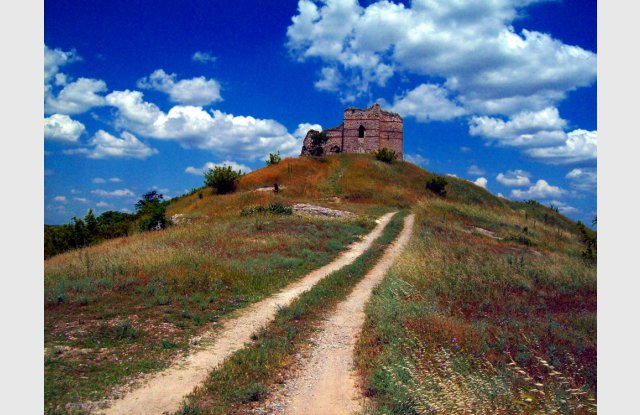
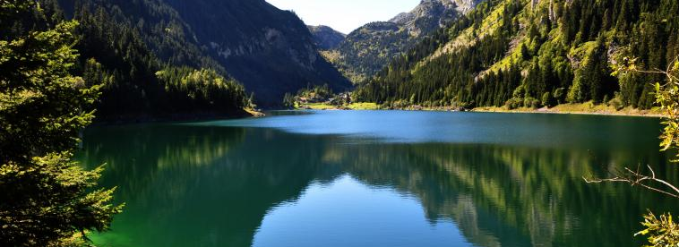
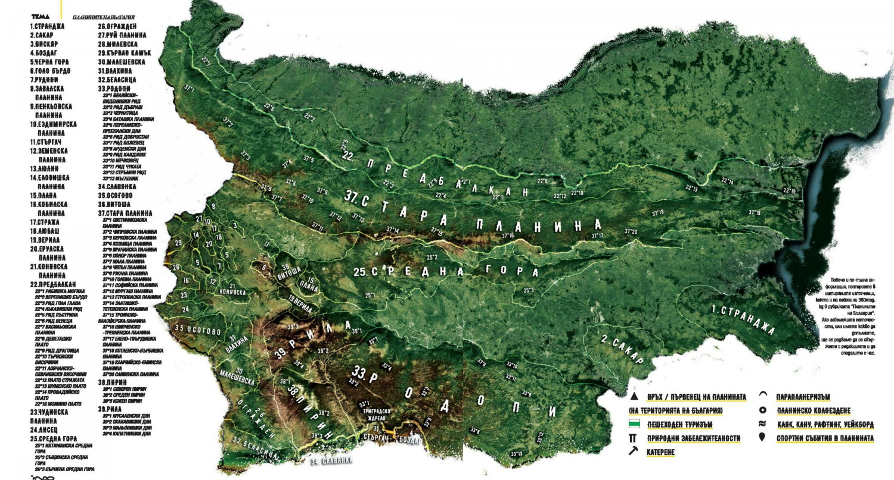

Спокойно можем да наречем България планинска страна. Приблизително половината от нейната територия е заета от различни по площ, височина, характер и произход планински образувания. Всички те са брънка от мощната верига на Алпо-Хималаите, обхващаща множество планински системи на два континента - Европа и Азия. Планините в България са изключително разнообразни. Ако им липсва нещо, то това са само “космическите” височини и вечните снегове и ледове. Малки и големи, голи и обрасли, заоблени и стръмни, ниски и високи, скалисти и откровено алпийски - всички те са достъпни през 4-те годишни сезона и предоставят неограничени възможности за отдих, спорт и туризъм.
Географската наука посочва 37 планини на територията на България, като 36 от тях са в южната част на страната. Стара планина е граница между Северна и Южна България. Именно Стара планина, най-дългата и най-голяма по площ, известна още и като Балкана, е дала името на нашия Балкански полуостров. Успоредно и южно от нея се простира втората по дължина планинска верига у нас - Средна гора. Тези две планини, освен великолепните си природни дадености, са тясно свързани и с историята на нашия народ. Най-внушителната планинска система обаче е Рило-Родопският масив, включващ Рила, Пирин, Родопи, Славянка и Стъргач.
Рила е шеста по височина в Европа и най-висока на Балканския полуостров (връх Мусала - 2925 м). Пирин е най-красивата и алпийска българска планина. Родопите са втората по площ и една от най-интересните наши планини по отношение на растителния и животински свят, архитектурата на селищата и културните традиции на населението. Славянка и Стъргач са гранични планини с Гърция. Славянка е много интересен туристически обект, известен и с находищата си на пирински чай. Източно от Рило-Родопския масив се намират две по-ниски планини - Сакар и Странджа. Странджа е тясно свързана с борбите на българите за освобождение от турско владичество.
Друга планинска система е Планско-Завалската група, включваща 5 планини - Завалска, Вискяр, Люлин, Витоша и Плана, разположени в редица, югоизточно от границата със Сърбия. Най-висока, голяма и известна от тях е Витоша. Разположена непосредствено южно до столицата, тя е най-посещаваната планина. На нейния първенец - Черни връх (2290 м) е поставено началото на организираното туристическо движение в България. На 27 август 1895 г., по призива на големия български писател и демократ Алеко Константинов, тук се изкачват пеша от София 300 софийски граждани - направо невероятно за онова време!
Верило-Руйската група обхваща 7 сравнително ниски планини, разположени между границата със Сърбия и Рила планина. Това са Руй (гранична със Сърбия и е най-висока в групата - 1706 м), Ездимирска, Стража, Любаш, Черна гора, Голо бърдо и Верила. Въпреки малката си надморска височина и неголяма площ, всяка от тези планини е интересна сама за себе си. В Голо бърдо например се намира резерватът “Острица”, изключително богат на ендeмитни растителни видове.
Планинската система Краище има 11 отделни планински образувания. Както при Верило-Руйската група и тук планините са малки по площ и сравнително ниски. Най-високи са граничните със Сърбия Милевска и Кървав камък, съответно 1733 и 1737 м.
В югозападния ъгъл на България е разположена Осоговско-Беласишката планинска група. Осоговска планина и Беласица са високи над 2000 метра, а Влахина и Малашевска планина се доближават плътно до тях. Петата планина в тази група е Огражден. Четири от планините са на българо-македонската граница, а Беласица е на територията на 3 държави - България, Гърция и Македония. Връх Тумба (1881 м) е възелът между трите съседни балкански страни.
От всичките 37 малки и големи планини, 8 надминават 2000 метра: Рила (връх Мусала - 2925 м), Пирин (връх Вихрен - 2914 м), Стара планина (връх Ботев - 2376 м), Витоша (Черни връх - 2290 м), Осоговска (връх Руен - 2252 м), Славянка (Гоцев връх - 2212 м), Родопи (връх Голям Перелик - 2191 м) и Беласица (връх Радомир - 2029 м). Всички те са обект на туристическа и спортна активност, а Родопите са и доста гъсто населени.
Около 400 са високопланинските езера у нас, пръснати из циркусите на Рила и Пирин и едно - в Стара планина. Има още много естествени езера с друг произход, главно из Родопите и по-малко из Стара планина. Това е едно безценно богатство на българската природа, което тепърва ще привлича и омайва хиляди любители.
Уникалната планинска природа на България все повече се превръща в първостепенна грижа на държавата с оглед съхраняването ґ за сегашните и за бъдещите поколения. Създадени са десетки биосферни резервати, а огромни територии от Пирин, Рила и Стара планина са обявени за Национални паркове. Националният парк “Пирин” е включен в листата на ЮНЕСКО за защитени територии и природни обекти, представляващи наднационални, общочовешки ценности.
Много са възможностите, които предоставят българските планини за приятно и полезно прекарване на свободното време. За автотуристите има достатъчно разклонена пътна мрежа, осигуряваща достъп до най-интересните природни, исторически и културни забележителности, както и до всички населени пунктове и курорти. Неограничени са възможностите за пешеходен туризъм, който може да се практикува през всичките годишни сезони. Главно за неговите нужди в българските планини има построени над 300 хижи (за информация и резервации тел. 02/ 9801285) и високопланински заслони - достатъчно гъста мрежа, която позволява и най-дългият планински преход да приключи в рамките на един ден.
Хиляди са километрите с туристическа маркировка, осигуряваща висока степен на сигурност при придвижване в планините. В България е възприета четирицветната лентова лятна маркировка, характерна за повечето европейски страни с развит пешеходен туризъм. Основните цветове при нея са червен, син, зелен и жълт, а белият цвят е спомагателен. Трябва да се знае, че червената маркировка по принцип е за билата. Зимната маркировка е от жълто-черни метални колове, високи между 3 и 4 метра и указва сравнително най-безопасния път по даден маршрут при сериозна снежна покривка. При по-голяма част от маршрутите, особено в Рила, Пирин и по билото на Стара планина, освен номерация на коловете има и азимутни табели.
В българските планини има много добри възможности за ски-спорт в четири големи ски-центъра - Боровец (Рила), Пампорово (Родопи), Алеко (Витоша) и Банско (Пирин). С най-висок коефициент е Боровец, където се организират състезания за Европейската купа. Боровец е бил и домакин на кръг за Световната купа. По-малките ски-центрове с локално значение са - Семково, Паничище, Рилски езера, Мальовица и Говедарци в Рила, Безбог в Пирин, Петрохан, Ком, Стражата, Беклемето, Плевен, Узана, Чумерна в Стара планина, Здравец, Бяла черква, Персенк, Юндола, Марциганица в Родопите, Ветровала и Конярника във Витоша и други. Чудесни условията за ски-туризъм предлагат склоновете на алпийските планини Рила и Пирин, но и Стара планина, Родопите, Витоша, Осогово.
Българските планини предлагат идеални условия и за един от най-атрактивните и емоционални спортове сред природата - алпинизмът. Десетки са алпийските обекти у нас, които представляват интерес и за най-изявените катерачи в Европа. На първо място, без конкуренция, е Мальовишкият дял на Рила - люлката и центърът на българския алпинизъм - огромен алпийски “стадион”, сред който се извисява най-красивият български връх - Мальовица (2730 м). Други известни алпийски обекти са Вихрен и Стъпалата в Пирин, Вратцата, Лакатник, Райските скали, Северния Джендем, Мъглиж и Карандила в Стара планина, Комините и Резньовете на Витоша, ждрелото на Ерма.
Много добри условия има и за други съвременни планински спортове - планински маратон, маунтинбайк, делта- и парапланеризъм, рафтинг и каякинг.
Красотата, разнообразието и достъпността им през всички сезони правят българските планини желан обект за вътрешен и международен туризъм.
За здравето, живота и сигурността на туристите и спортистите в планините се грижи отлично организираната и екипирана Планинска спасителна служба (ПСС) и над 15 добре обучени кучета. Около 50 щатни и 700 доброволни планински спасители осигуряват територията на българските планини и чрез самоотвержения си труд и любов към хората и планината вдъхват спокойствие и повече увереност у всички любители на природата. Централен денонощен пост се помещава в Централата на ПСС в столичния квартал “Лозенец”, тел. 02/9632000, 0481843, 088621286. Поддържа се постоянна радиовръзка с повече от 250 хижи и постове на ПСС. Към Планниската спасителна служба работят три централни бази - в Боровец, Банско и Пампорово, множество местни бази - Алеко, Черни връх и Офелиите на Витоша, Вежен, Бъзов дял, Узана и Българка на Стара планина, Мечичал над Чепеларе, Здравец в Родопите, над Пловдив, Осогово в едноименната планина над Кюстендил. Съществуват и немалко временни и постоянни спасителни постове - Резена и Конярника на Витоша, Маркуджиците и Чатарлъка на Рила, Чалин валог, хижа “Яворов” и Шилигарника на Пирин.
Структурите на ПСС са участвали успешно в ликвидиране последиците от земетресения и други природни бедствия в Турция, Гърция, Армения, Кайро и у нас.
И в България вече се извършва и планинска здравна застраховка, обезпечаваща разходите при евентуална спасителна акция.
